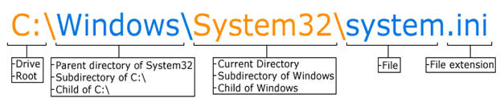

SubTopic 2: File Management
Qn23. Define a file path (https://www.computerhope.com/jargon/p/path.htm)
A path is the complete location or name of where a computer, file, device, or web page is located.
Qn24. Consider the file path I:\2020\ICT Department\Notes\IGASCO\ALevel\Lesson Notes.pptx
a. which one is the;
i. Root directory/hard disk partition…….
I
ii. The parent Folder………..
2020
iii. Subfolders
a. ICT Department b. Notes c. IGASCO d. ALevel
iv. Filename
Notes
v. File extension
pptx
b. Which type of file is Lesson Notes
A PowerPoint presentation file
Qn25. State any five features that make up a windows desktop screen
Qn26. What is meant by customising the desktop?
Is the changing of the desktop appearance, background and resolution to suit the user’s interest
Qn27. State any five desktop features that can be changed via personalise